CODING AGENTS AS PIXEL WORLD MODELS
traex/GPT-6.1-Sol · 0052
点击播放 · 原生 RGB 像素
逐轮保存的候选
回放视频、检查图与代码变化。
每份候选均可单独播放。实际图片检查记录在下方工具轨迹中。
候选 01播放与检查图
点击播放 · 原生 RGB 像素

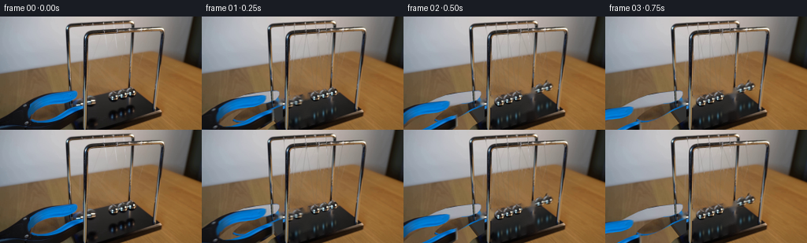
展开代码变化
--- 上一保存版本
+++ 本次保存版本
@@ -0,0 +1,161 @@
+from pathlib import Path
+import math
+import numpy as np
+from PIL import Image,ImageDraw,ImageFilter
+import cv2
+from scipy.ndimage import gaussian_filter
+from artifact_io import save
+
+ROOT=Path(__file__).resolve().parent
+S=4; W,H=256,144
+src=np.array(Image.open(ROOT/'first_frame.png').convert('RGB'))
+def maskpoly(points):
+ im=Image.new('L',(W*S,H*S));ImageDraw.Draw(im).polygon([(round(x*S),round(y*S)) for x,y in points],fill=255)
+ return im
+
+def ellipse_mask(cx,cy,rx,ry):
+ im=Image.new('L',(W*S,H*S));ImageDraw.Draw(im).ellipse(((cx-rx)*S,(cy-ry)*S,(cx+rx)*S,(cy+ry)*S),fill=255);return im
+
+# The grasping tongs are a single foreground layer. Their open centre is transparent.
+outer=[(-5,129),(5,124),(19,116),(30,110),(42,104),(53,100),(69,97),(86,95),(94,94.5),(98,95.5),(98,99.5),(96,103),(93,106),(83,109.6),(74,110.4),(61,114.6),(49,121.6),(41,128.3),(38.6,132),(44,134.8),(54,134),(64,130.8),(74,125.8),(88,118.7),(101,113.5),(107,112.1),(108,126.7),(97,134),(88,139),(82,145),(-5,149)]
+toolmask=maskpoly(outer)
+orig_hi=Image.fromarray(src).resize((W*S,H*S),Image.Resampling.LANCZOS)
+tool=orig_hi.copy();tool.putalpha(toolmask)
+
+# Clear the moving bobs, their thin filaments, and their reflections.
+cleanup=np.zeros((H,W),np.uint8)
+held=[(100.2,110.4),(113.6,107.9)]
+base=np.array([(121.5,108.3),(132.8,105.0),(144.1,101.7),(155.5,98.3),(166.5,95.1)])
+for x,y in held+list(map(tuple,base)):
+ cv2.ellipse(cleanup,(round(x),round(y)),(8,8),0,0,360,255,-1)
+for x,y in base:
+ cv2.ellipse(cleanup,(round(x),round(y+23)),(8,11),0,0,360,255,-1)
+# Initial fine thread positions, including the two displaced threads.
+back=np.array([(104,9.5),(117,8.8),(131,8.0),(144.5,7.6),(157,7)])
+front=np.array([(117.5,21),(132.5,19.7),(148,18.7),(164,17.8),(178.5,16.8)])
+for i,b in enumerate(held+list(map(tuple,base[2:]))):
+ for p in [back[i],front[i]]:
+ cv2.line(cleanup,tuple(np.rint(p+[0,3]).astype(int)),(int(round(b[0])),int(round(b[1]-5))),255,1)
+# Fixed uprights are never erased or moved.
+protect=np.zeros((H,W),np.uint8)
+cv2.line(protect,(107,34),(106,143),255,5)
+cv2.line(protect,(169,23),(165,89),255,4)
+cleanup[protect>0]=0
+bg=cv2.inpaint(src,cleanup,3,cv2.INPAINT_TELEA)
+
+# Reconstruct the tabletop and the obscured corner of the base under the withdrawing tongs.
+Y,X=np.mgrid[0:H,0:W]
+# Texture continues along the oblique grain direction from the visible table.
+mapy=(Y-48).astype(np.float32)
+mapx=(X-0.31*48).astype(np.float32)
+wood=cv2.remap(src,mapx,mapy,cv2.INTER_LINEAR,borderMode=cv2.BORDER_REFLECT_101).astype(float)
+# Use a smoothly varying illumination matched to the tabletop adjoining the jaws.
+wood*=np.stack([0.99+0.0006*(Y-100),0.97+0.0004*(Y-100),0.96+0.0003*(Y-100)],axis=-1)
+wood=np.clip(wood,0,255).astype(np.uint8)
+reveal=Image.fromarray(wood).resize((W*S,H*S),Image.Resampling.BICUBIC)
+# The four sided black plinth and its warm beveled rim.
+basepoly=maskpoly([(82.2,115),(166.7,89),(205.3,118.6),(108,150)])
+rim=maskpoly([(81.8,115),(108,149),(108,154),(81.8,120)])
+xx,yy=np.meshgrid(np.arange(W*S)/S,np.arange(H*S)/S)
+val=47-0.17*(xx-120)-0.105*(yy-112)
+plinth=np.stack([val*1.01,val*1.015,val*1.0],axis=2)
+plinth=np.clip(plinth,0,255).astype(np.uint8)
+reveal.paste(Image.fromarray(plinth),(0,0),basepoly)
+ImageDraw.Draw(reveal).polygon([(x*S,y*S) for x,y in [(81.8,115),(108,149),(108,154),(81.8,120)]],fill=(51,42,33))
+# Rear polished support continues behind the tool down to the left rear foot.
+d=ImageDraw.Draw(reveal)
+for off,col,width in [(0,(42,42,36),2.4),(.3,(127,128,117),1),(-.8,(26,37,41),.65),(.8,(187,180,149),.35)]:
+ d.line(((88.5+off)*S,91*S,(89.8+off)*S,115*S),fill=col,width=max(1,round(width*S)))
+d.ellipse((87*S,112.5*S,93*S,117*S),fill=(30,32,30))
+# Composite only the old tool silhouette, leaving every other original surface undisturbed.
+tm=np.array(toolmask.resize((W,H),Image.Resampling.LANCZOS))/255
+reveal_low=np.array(reveal.resize((W,H),Image.Resampling.LANCZOS))
+bg=(bg*(1-tm[:,:,None])+reveal_low*tm[:,:,None]).astype(np.uint8)
+# Restore the original chrome front post with exact source pixels.
+bg[protect>0]=src[protect>0]
+background=Image.fromarray(bg).resize((W*S,H*S),Image.Resampling.LANCZOS)
+background.save(ROOT/'.tmp/background.png')
+
+# Chrome is taken from the actual bobs in the first image: no painted replacement of the metal.
+sprites=[]
+for i,(cx,cy) in enumerate(base[2:]):
+ # The little top attachment and lower metallic sphere form one rigid bob.
+ m=ellipse_mask(cx,cy,6.5 if i==0 else 6.1,5.9 if i==0 else 5.7)
+ md=ImageDraw.Draw(m);md.ellipse(((cx-3.2)*S,(cy-8)*S,(cx+2.2)*S,(cy-3)*S),fill=235)
+ # Natural optical softness at the silhouette.
+ m=m.filter(ImageFilter.GaussianBlur(.28*S))
+ sp=orig_hi.copy();sp.putalpha(m)
+ box=(round((cx-9)*S),round((cy-10)*S),round((cx+9)*S),round((cy+9)*S))
+ sprites.append(sp.crop(box))
+
+# Soft base reflections, tinted by the same room and sky highlights as the source.
+def reflection_layer(positions):
+ yy,xx=np.mgrid[0:H*S,0:W*S].astype(float);xx/=S;yy/=S
+ out=np.zeros((H*S,W*S,4),np.uint8)
+ opacity=np.zeros((H*S,W*S),float); colors=np.zeros((H*S,W*S,3),float)
+ for i,(cx,cy) in enumerate(positions):
+ ry=cy+23.5
+ shape=np.exp(-((xx-cx)/5.8)**2-((yy-ry)/8.0)**2)
+ # Broad dark reflected sphere and the blue-white glints.
+ a=.48*shape
+ opacity=opacity+a*(1-opacity)
+ gleam=np.exp(-((xx-(cx-1.2))/1.25)**2-((yy-(ry+1.3))/3.3)**2)
+ warm=np.exp(-((xx-(cx+3.0))/1.2)**2-((yy-(ry-.7))/2.9)**2)
+ colors+=shape[:,:,None]*np.array([4.,8.,11.])+gleam[:,:,None]*np.array([44,80,95])+warm[:,:,None]*np.array([38,37,25])
+ out[:,:,:3]=np.clip(colors/np.maximum(opacity[:,:,None],.05),0,255)
+ out[:,:,3]=np.clip(opacity*255,0,255)
+ return Image.fromarray(out)
+
+# Analytic pendulum motion: an incoming pair exchanges momentum with the other pair.
+# The projected horizontal swing axis recedes up-right along the row of spheres.
+def positions(t):
+ release=.065
+ elapsed=max(0,t-release)
+ period=1.13
+ theta=-.305*math.cos(2*math.pi*elapsed/period)*math.exp(-.055*elapsed)
+ out=base.copy()
+ for i in range(5):
+ a=min(0,theta) if i<2 else (max(0,theta) if i>2 else 0)
+ dx=76.5*math.sin(a)
+ dy=-.275*dx-82*(1-math.cos(a))
+ out[i]+=np.array([dx,dy])
+ return out
+
+def compose(t):
+ p=positions(t)
+ im=background.copy().convert('RGBA')
+ im=Image.alpha_composite(im,reflection_layer(p))
+ # Two hair-fine suspension threads run to each ball from the two parallel rails.
+ lines=Image.new('RGBA',im.size); d=ImageDraw.Draw(lines)
+ for i,(cx,cy) in enumerate(p):
+ for j,anchor in enumerate([back[i],front[i]]):
+ start=anchor.copy();start[1]+=2
+ end=np.array([cx+(-.6 if j==0 else .6),cy-5.4])
+ d.line((tuple(start*S),tuple(end*S)),fill=(209,207,193,65 if j==0 else 82),width=2)
+ lines=lines.filter(ImageFilter.GaussianBlur(.32*S))
+ im=Image.alpha_composite(im,lines)
+ # Draw from the more distant end to the near end.
+ for i in range(4,-1,-1):
+ sp=sprites[0 if i<3 else i-2]
+ if i<2:
+ sp=sp.resize((round(sp.width*1.02),round(sp.height*1.02)),Image.Resampling.LANCZOS)
+ x,y=p[i]; loc=(round((x-9)*S),round((y-10)*S))
+ im.alpha_composite(sp,loc)
+ # Fixed front and rear posts correctly occlude the swinging bobs and threads.
+ rail=orig_hi.copy(); rail.putalpha(Image.fromarray(protect).resize(im.size,Image.Resampling.NEAREST))
+ im=Image.alpha_composite(im,rail)
+ # Withdraw diagonally out of the frame immediately after opening the grasp.
+ tt=max(0,t-.07)
+ dx=-min(165,92*tt);dy=min(55,29*tt)
+ if dx>-150:
+ im.alpha_composite(tool,(round(dx*S),round(dy*S)))
+ return np.array(im.convert('RGB').resize((W,H),Image.Resampling.LANCZOS))
+
+frames=[src]
+for n in range(1,20):
+ t=n/4
+ # Short real camera exposure softens the fastest impact passage only.
+ samples=[compose(t+dt) for dt in [-.009,0,.009]]
+ frames.append(np.rint(np.mean(samples,axis=0)).astype(np.uint8))
+frames=np.stack(frames)
+save(frames,ROOT)
候选 02播放与检查图
点击播放 · 原生 RGB 像素
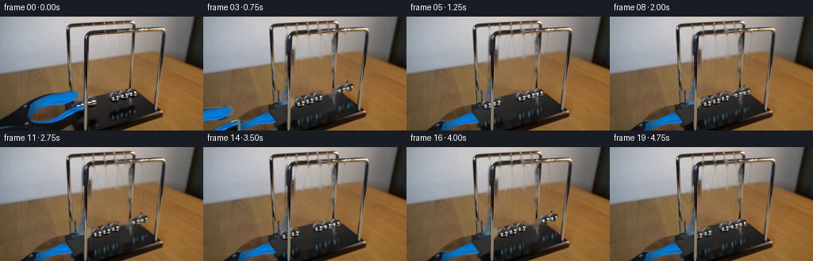
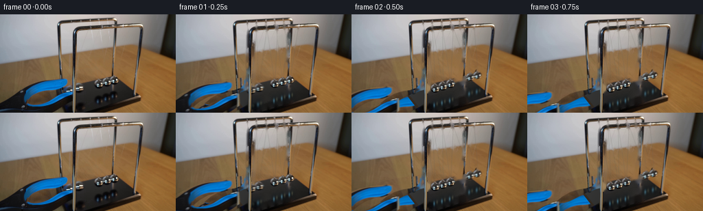
展开代码变化
--- 上一保存版本 +++ 本次保存版本 @@ -19,6 +19,7 @@ # The grasping tongs are a single foreground layer. Their open centre is transparent. outer=[(-5,129),(5,124),(19,116),(30,110),(42,104),(53,100),(69,97),(86,95),(94,94.5),(98,95.5),(98,99.5),(96,103),(93,106),(83,109.6),(74,110.4),(61,114.6),(49,121.6),(41,128.3),(38.6,132),(44,134.8),(54,134),(64,130.8),(74,125.8),(88,118.7),(101,113.5),(107,112.1),(108,126.7),(97,134),(88,139),(82,145),(-5,149)] toolmask=maskpoly(outer) +toolmask=toolmask.filter(ImageFilter.MaxFilter(13)).filter(ImageFilter.GaussianBlur(.25*S)) orig_hi=Image.fromarray(src).resize((W*S,H*S),Image.Resampling.LANCZOS) tool=orig_hi.copy();tool.putalpha(toolmask) @@ -26,7 +27,7 @@ cleanup=np.zeros((H,W),np.uint8) held=[(100.2,110.4),(113.6,107.9)] base=np.array([(121.5,108.3),(132.8,105.0),(144.1,101.7),(155.5,98.3),(166.5,95.1)]) -for x,y in held+list(map(tuple,base)): +for x,y in held+list(map(tuple,base[2:])): cv2.ellipse(cleanup,(round(x),round(y)),(8,8),0,0,360,255,-1) for x,y in base: cv2.ellipse(cleanup,(round(x),round(y+23)),(8,11),0,0,360,255,-1) @@ -35,10 +36,10 @@ front=np.array([(117.5,21),(132.5,19.7),(148,18.7),(164,17.8),(178.5,16.8)]) for i,b in enumerate(held+list(map(tuple,base[2:]))): for p in [back[i],front[i]]: - cv2.line(cleanup,tuple(np.rint(p+[0,3]).astype(int)),(int(round(b[0])),int(round(b[1]-5))),255,1) + cv2.line(cleanup,tuple(np.rint(p+[0,4]).astype(int)),(int(round(b[0])),int(round(b[1]-5))),255,3) # Fixed uprights are never erased or moved. protect=np.zeros((H,W),np.uint8) -cv2.line(protect,(107,34),(106,143),255,5) +cv2.fillPoly(protect,[np.array([(107,32),(110,32),(109,143),(106,143)],np.int32)],255) cv2.line(protect,(169,23),(165,89),255,4) cleanup[protect>0]=0 bg=cv2.inpaint(src,cleanup,3,cv2.INPAINT_TELEA) @@ -46,8 +47,8 @@ # Reconstruct the tabletop and the obscured corner of the base under the withdrawing tongs. Y,X=np.mgrid[0:H,0:W] # Texture continues along the oblique grain direction from the visible table. -mapy=(Y-48).astype(np.float32) -mapx=(X-0.31*48).astype(np.float32) +mapy=(Y-24).astype(np.float32) +mapx=(X-0.31*24).astype(np.float32) wood=cv2.remap(src,mapx,mapy,cv2.INTER_LINEAR,borderMode=cv2.BORDER_REFLECT_101).astype(float) # Use a smoothly varying illumination matched to the tabletop adjoining the jaws. wood*=np.stack([0.99+0.0006*(Y-100),0.97+0.0004*(Y-100),0.96+0.0003*(Y-100)],axis=-1)
候选 03播放与检查图
点击播放 · 原生 RGB 像素

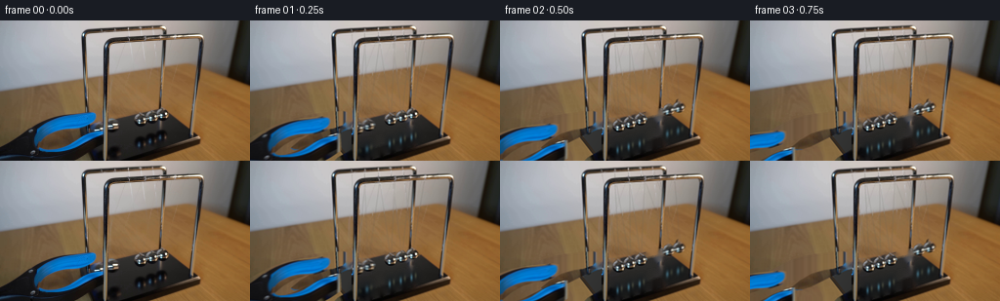
展开代码变化
--- 上一保存版本 +++ 本次保存版本 @@ -36,19 +36,21 @@ front=np.array([(117.5,21),(132.5,19.7),(148,18.7),(164,17.8),(178.5,16.8)]) for i,b in enumerate(held+list(map(tuple,base[2:]))): for p in [back[i],front[i]]: - cv2.line(cleanup,tuple(np.rint(p+[0,4]).astype(int)),(int(round(b[0])),int(round(b[1]-5))),255,3) + cv2.line(cleanup,tuple(np.rint(p+[0,4]).astype(int)),(int(round(b[0])),int(round(b[1]-5))),255,1) # Fixed uprights are never erased or moved. protect=np.zeros((H,W),np.uint8) -cv2.fillPoly(protect,[np.array([(107,32),(110,32),(109,143),(106,143)],np.int32)],255) +cv2.fillPoly(protect,[np.array([(106,32),(111,32),(109,143),(104.8,143)],np.int32)],255) cv2.line(protect,(169,23),(165,89),255,4) +cv2.line(protect,(111,21),(206,16),255,5) +cv2.line(protect,(88,12),(168,7),255,4) cleanup[protect>0]=0 bg=cv2.inpaint(src,cleanup,3,cv2.INPAINT_TELEA) # Reconstruct the tabletop and the obscured corner of the base under the withdrawing tongs. Y,X=np.mgrid[0:H,0:W] # Texture continues along the oblique grain direction from the visible table. -mapy=(Y-24).astype(np.float32) -mapx=(X-0.31*24).astype(np.float32) +mapy=np.clip(Y-48,73,92).astype(np.float32) +mapx=(X-0.31*30).astype(np.float32) wood=cv2.remap(src,mapx,mapy,cv2.INTER_LINEAR,borderMode=cv2.BORDER_REFLECT_101).astype(float) # Use a smoothly varying illumination matched to the tabletop adjoining the jaws. wood*=np.stack([0.99+0.0006*(Y-100),0.97+0.0004*(Y-100),0.96+0.0003*(Y-100)],axis=-1)
候选 04播放与检查图
点击播放 · 原生 RGB 像素
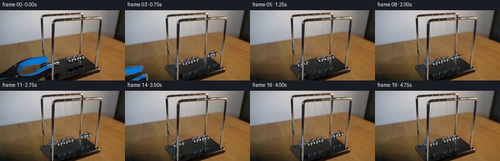
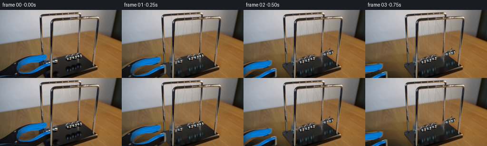
展开代码变化
--- 上一保存版本 +++ 本次保存版本 @@ -43,17 +43,29 @@ cv2.line(protect,(169,23),(165,89),255,4) cv2.line(protect,(111,21),(206,16),255,5) cv2.line(protect,(88,12),(168,7),255,4) +# Also clear tool cast shadows that remain after the instrument withdraws. +cv2.fillPoly(cleanup,[np.array([(38,126),(43,135),(84,120),(105,117),(101,111),(85,112)],np.int32)],255) +cv2.fillPoly(cleanup,[np.array([(92,92),(103,92),(105,114),(93,114)],np.int32)],255) cleanup[protect>0]=0 bg=cv2.inpaint(src,cleanup,3,cv2.INPAINT_TELEA) # Reconstruct the tabletop and the obscured corner of the base under the withdrawing tongs. Y,X=np.mgrid[0:H,0:W] -# Texture continues along the oblique grain direction from the visible table. -mapy=np.clip(Y-48,73,92).astype(np.float32) -mapx=(X-0.31*30).astype(np.float32) -wood=cv2.remap(src,mapx,mapy,cv2.INTER_LINEAR,borderMode=cv2.BORDER_REFLECT_101).astype(float) -# Use a smoothly varying illumination matched to the tabletop adjoining the jaws. -wood*=np.stack([0.99+0.0006*(Y-100),0.97+0.0004*(Y-100),0.96+0.0003*(Y-100)],axis=-1) +# A continuous local wood field, extrapolated from unobscured tabletop pixels. +# A low-order illumination model plus grain measured in the source avoids repeated jaws. +fit=(Y>65)&(Y<140)&(((X<20)&(Y<109))|((X<80)&(Y<93))|(X>215)) +fx=X[fit]/256;fy=Y[fit]/144 +A=np.stack([np.ones_like(fx),fx,fy,fx*fx,fx*fy,fy*fy],axis=1) +coef=np.linalg.lstsq(A,src[fit].astype(float),rcond=None)[0] +u=X/256;v=Y/144 +field=np.stack([np.ones_like(u),u,v,u*u,u*v,v*v],axis=-1) +wood=field@coef +# Subtle longitudinal grain, extracted from the visible patch at left. +residual=src.astype(float)-wood +texture=residual[72:92,2:78] +gx=(X-.27*(Y-90)).astype(int)%texture.shape[1] +gy=(Y-90)%texture.shape[0] +wood+=.20*texture[gy,gx] wood=np.clip(wood,0,255).astype(np.uint8) reveal=Image.fromarray(wood).resize((W*S,H*S),Image.Resampling.BICUBIC) # The four sided black plinth and its warm beveled rim. @@ -74,6 +86,15 @@ tm=np.array(toolmask.resize((W,H),Image.Resampling.LANCZOS))/255 reveal_low=np.array(reveal.resize((W,H),Image.Resampling.LANCZOS)) bg=(bg*(1-tm[:,:,None])+reveal_low*tm[:,:,None]).astype(np.uint8) +# Join the extrapolated tabletop seamlessly beyond the old jaw outline. +blendpoly=maskpoly([(-5,100),(18,108),(34,98),(55,93),(79,92),(98,94),(98,110),(83,114),(87,127),(105,136),(103,147),(-5,149)]) +blend=np.array(blendpoly.filter(ImageFilter.GaussianBlur(2.2*S)).resize((W,H),Image.Resampling.LANCZOS))/255 +# Include the old tool's shadow; the revealed plinth is the same physical base. +bg=(bg*(1-blend[:,:,None])+reveal_low*blend[:,:,None]).astype(np.uint8) +# Clear a little black tong edge hiding against the back post. +patch=maskpoly([(92,91),(103,91),(105,112),(102,115),(89,119),(91,113)]) +pma=np.array(patch.resize((W,H),Image.Resampling.LANCZOS))/255 +bg=(bg*(1-pma[:,:,None])+reveal_low*pma[:,:,None]).astype(np.uint8) # Restore the original chrome front post with exact source pixels. bg[protect>0]=src[protect>0] background=Image.fromarray(bg).resize((W*S,H*S),Image.Resampling.LANCZOS)
候选 05播放与检查图
点击播放 · 原生 RGB 像素
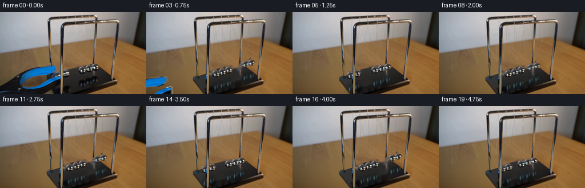
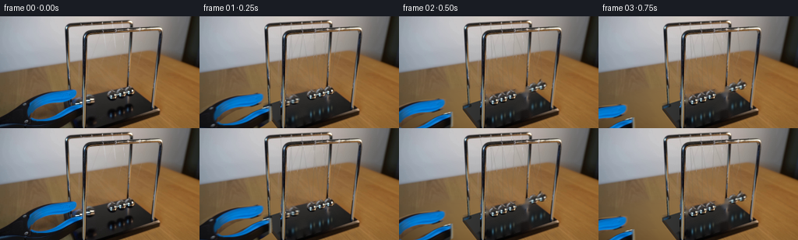
展开代码变化
--- 上一保存版本 +++ 本次保存版本 @@ -53,7 +53,7 @@ Y,X=np.mgrid[0:H,0:W] # A continuous local wood field, extrapolated from unobscured tabletop pixels. # A low-order illumination model plus grain measured in the source avoids repeated jaws. -fit=(Y>65)&(Y<140)&(((X<20)&(Y<109))|((X<80)&(Y<93))|(X>215)) +fit=(Y>79)&(Y<140)&(((X<20)&(Y<109))|((X<80)&(Y<93))|(X>215)) fx=X[fit]/256;fy=Y[fit]/144 A=np.stack([np.ones_like(fx),fx,fy,fx*fx,fx*fy,fy*fy],axis=1) coef=np.linalg.lstsq(A,src[fit].astype(float),rcond=None)[0]
可观测工具轨迹
实际执行的命令与返回图片。
命令 1exit 0
/bin/bash -lc "ls -la && cat prompt.txt && printf '\\n---RULES---\\n' && cat GENERATION_RULES.md"
命令 2exit 0
/bin/bash -lc "cat artifact_io.py && python - <<'PY'
from PIL import Image
im=Image.open('first_frame.png');print(im.size); im.resize((1024,576)).save('.tmp/large.png')
PY"命令 3exit 0
/bin/bash -lc "python - <<'PY'
import importlib.util
for name in ['cv2','scipy','PIL','numpy']:
print(name, bool(importlib.util.find_spec(name)))
from PIL import Image
im=Image.open('first_frame.png'); im.crop((75,0,180,144)).resize((630,864)).save('.tmp/crop.png')
PY"命令 4exit 0
/bin/bash -lc "python - <<'PY'
from PIL import Image
im=Image.open('first_frame.png'); im.resize((1280,720),Image.Resampling.NEAREST).save('.tmp/pixel.png')
PY"命令 5exit 0
/bin/bash -lc "python - <<'PY'
from PIL import Image,ImageDraw
im=Image.open('first_frame.png').resize((1024,576))
d=ImageDraw.Draw(im)
for x in range(80,191,10):
d.line((x*4,80*4,x*4,140*4), fill=(255,0,0),width=1); d.text((x*4,78*4),str(x),fill='red')
for y in range(90,141,10):
d.line((80*4,y*4,190*4,y*4),fill='red',width=1);d.text((185*4,y*4),str(y),fill='red')
im.save('.tmp/grid.png')
PY"命令 6exit 0
/bin/bash -lc "python - <<'PY'
from PIL import Image
im=Image.open('first_frame.png');im.crop((95,5,199,104)).resize((832,792)).save('.tmp/strings.png')
PY"命令 7exit 0
/bin/bash -lc "cat > generate.py <<'PY'
from pathlib import Path
import math
import numpy as np
from PIL import Image,ImageDraw,ImageFilter
import cv2
from scipy.ndimage import gaussian_filter
from artifact_io import save
ROOT=Path(__file__).resolve().parent
S=4; W,H=256,144
src=np.array(Image.open(ROOT/'first_frame.png').convert('RGB'))
def maskpoly(points):
im=Image.new('L',(W*S,H*S));ImageDraw.Draw(im).polygon([(round(x*S),round(y*S)) for x,y in points],fill=255)
return im
def ellipse_mask(cx,cy,rx,ry):
im=Image.new('L',(W*S,H*S));ImageDraw.Draw(im).ellipse(((cx-rx)*S,(cy-ry)*S,(cx+rx)*S,(cy+ry)*S),fill=255);return im
# The grasping tongs are a single foreground layer. Their open centre is transparent.
outer=[(-5,129),(5,124),(19,116),(30,110),(42,104),(53,100),(69,97),(86,95),(94,94.5),(98,95.5),(98,99.5),(96,103),(93,106),(83,109.6),(74,110.4),(61,114.6),(49,121.6),(41,128.3),(38.6,132),(44,134.8),(54,134),(64,130.8),(74,125.8),(88,118.7),(101,113.5),(107,112.1),(108,126.7),(97,134),(88,139),(82,145),(-5,149)]
toolmask=maskpoly(outer)
orig_hi=Image.fromarray(src).resize((W*S,H*S),Image.Resampling.LANCZOS)
tool=orig_hi.copy();tool.putalpha(toolmask)
# Clear the moving bobs, their thin filaments, and their reflections.
cleanup=np.zeros((H,W),np.uint8)
held=[(100.2,110.4),(113.6,107.9)]
base=np.array([(121.5,108.3),(132.8,105.0),(144.1,101.7),(155.5,98.3),(166.5,95.1)])
for x,y in held+list(map(tuple,base)):
cv2.ellipse(cleanup,(round(x),round(y)),(8,8),0,0,360,255,-1)
for x,y in base:
cv2.ellipse(cleanup,(round(x),round(y+23)),(8,11),0,0,360,255,-1)
# Initial fine thread positions, including the two displaced threads.
back=np.array([(104,9.5),(117,8.8),(131,8.0),(144.5,7.6),(157,7)])
front=np.array([(117.5,21),(132.5,19.7),(148,18.7),(164,17.8),(178.5,16.8)])
for i,b in enumerate(held+list(map(tuple,base[2:]))):
for p in [back[i],front[i]]:
cv2.line(cleanup,tuple(np.rint(p+[0,3]).astype(int)),(int(round(b[0])),int(round(b[1]-5))),255,1)
# Fixed uprights are never erased or moved.
protect=np.zeros((H,W),np.uint8)
cv2.line(protect,(107,34),(106,143),255,5)
cv2.line(protect,(169,23),(165,89),255,4)
cleanup[protect>0]=0
bg=cv2.inpaint(src,cleanup,3,cv2.INPAINT_TELEA)
# Reconstruct the tabletop and the obscured corner of the base under the withdrawing tongs.
Y,X=np.mgrid[0:H,0:W]
# Texture continues along the oblique grain direction from the visible table.
mapy=(Y-48).astype(np.float32)
mapx=(X-0.31*48).astype(np.float32)
wood=cv2.remap(src,mapx,mapy,cv2.INTER_LINEAR,borderMode=cv2.BORDER_REFLECT_101).astype(float)
# Use a smoothly varying illumination matched to the tabletop adjoining the jaws.
wood*=np.stack([0.99+0.0006*(Y-100),0.97+0.0004*(Y-100),0.96+0.0003*(Y-100)],axis=-1)
wood=np.clip(wood,0,255).astype(np.uint8)
reveal=Image.fromarray(wood).resize((W*S,H*S),Image.Resampling.BICUBIC)
# The four sided black plinth and its warm beveled rim.
basepoly=maskpoly([(82.2,115),(166.7,89),(205.3,118.6),(108,150)])
rim=maskpoly([(81.8,115),(108,149),(108,154),(81.8,120)])
xx,yy=np.meshgrid(np.arange(W*S)/S,np.arange(H*S)/S)
val=47-0.17*(xx-120)-0.105*(yy-112)
plinth=np.stack([val*1.01,val*1.015,val*1.0],axis=2)
plinth=np.clip(plinth,0,255).astype(np.uint8)
reveal.paste(Image.fromarray(plinth),(0,0),basepoly)
ImageDraw.Draw(reveal).polygon([(x*S,y*S) for x,y in [(81.8,115),(108,149),(108,154),(81.8,120)]],fill=(51,42,33))
# Rear polished support continues behind the tool down to the left rear foot.
d=ImageDraw.Draw(reveal)
for off,col,width in [(0,(42,42,36),2.4),(.3,(127,128,117),1),(-.8,(26,37,41),.65),(.8,(187,180,149),.35)]:
d.line(((88.5+off)*S,91*S,(89.8+off)*S,115*S),fill=col,width=max(1,round(width*S)))
d.ellipse((87*S,112.5*S,93*S,117*S),fill=(30,32,30))
# Composite only the old tool silhouette, leaving every other original surface undisturbed.
tm=np.array(toolmask.resize((W,H),Image.Resampling.LANCZOS))/255
reveal_low=np.array(reveal.resize((W,H),Image.Resampling.LANCZOS))
bg=(bg*(1-tm[:,:,None])+reveal_low*tm[:,:,None]).astype(np.uint8)
# Restore the original chrome front post with exact source pixels.
bg[protect>0]=src[protect>0]
background=Image.fromarray(bg).resize((W*S,H*S),Image.Resampling.LANCZOS)
background.save(ROOT/'.tmp/background.png')
# Chrome is taken from the actual bobs in the first image: no painted replacement of the metal.
sprites=[]
for i,(cx,cy) in enumerate(base[2:]):
# The little top attachment and lower metallic sphere form one rigid bob.
m=ellipse_mask(cx,cy,6.5 if i==0 else 6.1,5.9 if i==0 else 5.7)
md=ImageDraw.Draw(m);md.ellipse(((cx-3.2)*S,(cy-8)*S,(cx+2.2)*S,(cy-3)*S),fill=235)
# Natural optical softness at the silhouette.
m=m.filter(ImageFilter.GaussianBlur(.28*S))
sp=orig_hi.copy();sp.putalpha(m)
box=(round((cx-9)*S),round((cy-10)*S),round((cx+9)*S),round((cy+9)*S))
sprites.append(sp.crop(box))
# Soft base reflections, tinted by the same room and sky highlights as the source.
def reflection_layer(positions):
yy,xx=np.mgrid[0:H*S,0:W*S].astype(float);xx/=S;yy/=S
out=np.zeros((H*S,W*S,4),np.uint8)
opacity=np.zeros((H*S,W*S),float); colors=np.zeros((H*S,W*S,3),float)
for i,(cx,cy) in enumerate(positions):
ry=cy+23.5
shape=np.exp(-((xx-cx)/5.8)**2-((yy-ry)/8.0)**2)
# Broad dark reflected sphere and the blue-white glints.
a=.48*shape
opacity=opacity+a*(1-opacity)
gleam=np.exp(-((xx-(cx-1.2))/1.25)**2-((yy-(ry+1.3))/3.3)**2)
warm=np.exp(-((xx-(cx+3.0))/1.2)**2-((yy-(ry-.7))/2.9)**2)
colors+=shape[:,:,None]*np.array([4.,8.,11.])+gleam[:,:,None]*np.array([44,80,95])+warm[:,:,None]*np.array([38,37,25])
out[:,:,:3]=np.clip(colors/np.maximum(opacity[:,:,None],.05),0,255)
out[:,:,3]=np.clip(opacity*255,0,255)
return Image.fromarray(out)
# Analytic pendulum motion: an incoming pair exchanges momentum with the other pair.
# The projected horizontal swing axis recedes up-right along the row of spheres.
def positions(t):
release=.065
elapsed=max(0,t-release)
period=1.13
theta=-.305*math.cos(2*math.pi*elapsed/period)*math.exp(-.055*elapsed)
out=base.copy()
for i in range(5):
a=min(0,theta) if i<2 else (max(0,theta) if i>2 else 0)
dx=76.5*math.sin(a)
dy=-.275*dx-82*(1-math.cos(a))
out[i]+=np.array([dx,dy])
return out
def compose(t):
p=positions(t)
im=background.copy().convert('RGBA')
im=Image.alpha_composite(im,reflection_layer(p))
# Two hair-fine suspension threads run to each ball from the two parallel rails.
lines=Image.new('RGBA',im.size); d=ImageDraw.Draw(lines)
for i,(cx,cy) in enumerate(p):
for j,anchor in enumerate([back[i],front[i]]):
start=anchor.copy();start[1]+=2
end=np.array([cx+(-.6 if j==0 else .6),cy-5.4])
d.line((tuple(start*S),tuple(end*S)),fill=(209,207,193,65 if j==0 else 82),width=2)
lines=lines.filter(ImageFilter.GaussianBlur(.32*S))
im=Image.alpha_composite(im,lines)
# Draw from the more distant end to the near end.
for i in range(4,-1,-1):
sp=sprites[0 if i<3 else i-2]
if i<2:
sp=sp.resize((round(sp.width*1.02),round(sp.height*1.02)),Image.Resampling.LANCZOS)
x,y=p[i]; loc=(round((x-9)*S),round((y-10)*S))
im.alpha_composite(sp,loc)
# Fixed front and rear posts correctly occlude the swinging bobs and threads.
rail=orig_hi.copy(); rail.putalpha(Image.fromarray(protect).resize(im.size,Image.Resampling.NEAREST))
im=Image.alpha_composite(im,rail)
# Withdraw diagonally out of the frame immediately after opening the grasp.
tt=max(0,t-.07)
dx=-min(165,92*tt);dy=min(55,29*tt)
if dx>-150:
im.alpha_composite(tool,(round(dx*S),round(dy*S)))
return np.array(im.convert('RGB').resize((W,H),Image.Resampling.LANCZOS))
frames=[src]
for n in range(1,20):
t=n/4
# Short real camera exposure softens the fastest impact passage only.
samples=[compose(t+dt) for dt in [-.009,0,.009]]
frames.append(np.rint(np.mean(samples,axis=0)).astype(np.uint8))
frames=np.stack(frames)
save(frames,ROOT)
PY
python generate.py"命令 8exit 0
/bin/bash -lc "cp generate.py .tmp/v1.py
python - <<'PY'
p='generate.py'
s=open(p).read().replace('toolmask=maskpoly(outer)','toolmask=maskpoly(outer)\\ntoolmask=toolmask.filter(ImageFilter.MaxFilter(13)).filter(ImageFilter.GaussianBlur(.25*S))')
s=s.replace('for x,y in held+list(map(tuple,base)):', 'for x,y in held+list(map(tuple,base[2:])):')
s=s.replace('mapy=(Y-48).astype(np.float32)', 'mapy=(Y-24).astype(np.float32)').replace('mapx=(X-0.31*48).astype(np.float32)','mapx=(X-0.31*24).astype(np.float32)')
s=s.replace('cv2.line(protect,(107,34),(106,143),255,5)', 'cv2.fillPoly(protect,[np.array([(107,32),(110,32),(109,143),(106,143)],np.int32)],255)')
s=s.replace('cv2.line(cleanup,tuple(np.rint(p+[0,3]).astype(int)),(int(round(b[0])),int(round(b[1]-5))),255,1)', 'cv2.line(cleanup,tuple(np.rint(p+[0,4]).astype(int)),(int(round(b[0])),int(round(b[1]-5))),255,3)')
open(p,'w').write(s)
PY
python generate.py"命令 9exit 0
/bin/bash -lc "python - <<'PY'
p='generate.py';s=open(p).read()
s=s.replace('mapy=(Y-24).astype(np.float32)', 'mapy=np.clip(Y-48,73,92).astype(np.float32)').replace('mapx=(X-0.31*24).astype(np.float32)','mapx=(X-0.31*30).astype(np.float32)')
s=s.replace('cv2.fillPoly(protect,[np.array([(107,32),(110,32),(109,143),(106,143)],np.int32)],255)','cv2.fillPoly(protect,[np.array([(106,32),(111,32),(109,143),(104.8,143)],np.int32)],255)')
s=s.replace(\"int(round(b[1]-5))),255,3)\",\"int(round(b[1]-5))),255,1)\")
# stationary rails survive all thread cleanup at their crossing.
s=s.replace('cleanup[protect>0]=0','cv2.line(protect,(111,21),(206,16),255,5)\\ncv2.line(protect,(88,12),(168,7),255,4)\\ncleanup[protect>0]=0')
open(p,'w').write(s)
PY
python generate.py"命令 10exit 0
/bin/bash -lc "python - <<'PY'
from PIL import Image
import numpy as np
im=np.array(Image.open('first_frame.png'))
for p in [(10,80),(50,80),(70,90),(10,100),(10,115),(210,110),(210,90),(40,95),(70,85)]:
x,y=p;print(p,im[y,x])
PY"命令 11exit 0
/bin/bash -lc "python - <<'PY'
# snapshot where all remaining dark-blue tool must be removed
from PIL import Image
im=Image.open('frames/19.png');im.resize((1024,576)).save('.tmp/last.png')
PY"命令 12exit 0
/bin/bash -lc "python - <<'PY'
p='generate.py';s=open(p).read();s=s.replace('(Y<96))|(X>215))','(Y<93))|(X>215))').replace('(X<20)|','((X<20)&(Y<109))|')
s=s.replace('residual=src.astype(float)-wood','residual=src.astype(float)-wood').replace('wood+=.48*texture[gy,gx]','wood+=.20*texture[gy,gx]')
s=s.replace('[(92,91),(99,92),(99,109),(102,115),(89,119),(91,113)]','[(92,91),(103,91),(105,112),(102,115),(89,119),(91,113)]')
open(p,'w').write(s)
PY"命令 13exit 0
/bin/bash -lc "python - <<'PY'
s=open('generate.py').read()
s=s.replace('cleanup[protect>0]=0\\nbg=cv2.inpaint', '''# Also clear tool cast shadows that remain after the instrument withdraws.
cv2.fillPoly(cleanup,[np.array([(38,126),(43,135),(84,120),(105,117),(101,111),(85,112)],np.int32)],255)
cv2.fillPoly(cleanup,[np.array([(92,92),(103,92),(105,114),(93,114)],np.int32)],255)
cleanup[protect>0]=0
bg=cv2.inpaint''')
a=s.index('# Texture continues along the oblique grain direction')
b=s.index('wood=np.clip(wood,0,255).astype(np.uint8)',a)
s=s[:a]+'''# A continuous local wood field, extrapolated from unobscured tabletop pixels.
# A low-order illumination model plus grain measured in the source avoids repeated jaws.
fit=(Y>65)&(Y<140)&((X<20)|((X<80)&(Y<96))|(X>215))
fx=X[fit]/256;fy=Y[fit]/144
A=np.stack([np.ones_like(fx),fx,fy,fx*fx,fx*fy,fy*fy],axis=1)
coef=np.linalg.lstsq(A,src[fit].astype(float),rcond=None)[0]
u=X/256;v=Y/144
field=np.stack([np.ones_like(u),u,v,u*u,u*v,v*v],axis=-1)
wood=field@coef
# Subtle longitudinal grain, extracted from the visible patch at left.
residual=src.astype(float)-wood
texture=residual[72:92,2:78]
gx=(X-.27*(Y-90)).astype(int)%texture.shape[1]
gy=(Y-90)%texture.shape[0]
wood+=.48*texture[gy,gx]
''' +s[b:]
s=s.replace('bg=(bg*(1-tm[:,:,None])+reveal_low*tm[:,:,None]).astype(np.uint8)', '''bg=(bg*(1-tm[:,:,None])+reveal_low*tm[:,:,None]).astype(np.uint8)
# Join the extrapolated tabletop seamlessly beyond the old jaw outline.
blendpoly=maskpoly([(-5,100),(18,108),(34,98),(55,93),(79,92),(98,94),(98,110),(83,114),(87,127),(105,136),(103,147),(-5,149)])
blend=np.array(blendpoly.filter(ImageFilter.GaussianBlur(2.2*S)).resize((W,H),Image.Resampling.LANCZOS))/255
# Include the old tool's shadow; the revealed plinth is the same physical base.
bg=(bg*(1-blend[:,:,None])+reveal_low*blend[:,:,None]).astype(np.uint8)
# Clear a little black tong edge hiding against the back post.
patch=maskpoly([(92,91),(99,92),(99,109),(102,115),(89,119),(91,113)])
pma=np.array(patch.resize((W,H),Image.Resampling.LANCZOS))/255
bg=(bg*(1-pma[:,:,None])+reveal_low*pma[:,:,None]).astype(np.uint8)''')
s=s.replace('mapy','mapy')
open('generate.py','w').write(s)
PY
python generate.py"命令 14exit 0
/bin/bash -lc "python - <<'PY'
p='generate.py';s=open(p).read().replace('fit=(Y>65)', 'fit=(Y>79)');open(p,'w').write(s)
import numpy as np
from PIL import Image
src=np.array(Image.open('first_frame.png'));Y,X=np.mgrid[0:144,0:256]
fit=(Y>79)&(Y<140)&(((X<20)&(Y<109))|((X<80)&(Y<93))|(X>215))
x=X[fit]/256;y=Y[fit]/144
A=np.stack([np.ones_like(x),x,y,x*x,x*y,y*y],axis=1);co=np.linalg.lstsq(A,src[fit],rcond=None)[0]
for x,y in [(0,144),(0,110),(60,120),(95,100)]:
u=x/256;v=y/144;print(x,y,np.array([1,u,v,u*u,u*v,v*v])@co)
PY"命令 15exit 0
/bin/bash -lc 'python generate.py'
命令 16exit 0
/bin/bash -lc "python - <<'PY'
import numpy as np
from PIL import Image
f=np.array(Image.open('first_frame.png'))
a=np.array(Image.open('frames/00.png'))
assert np.array_equal(f,a)
p=np.load('pixels.npz')['pixels'];print('Saved packed RGB shape:',p.shape,'; first frame exact:',np.array_equal(f,a))
PY
command -v ffmpeg || true"视觉工具实际返回图片 1
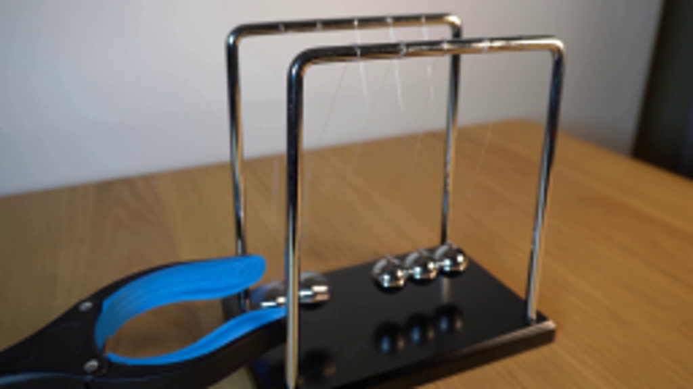
视觉工具实际返回图片 2
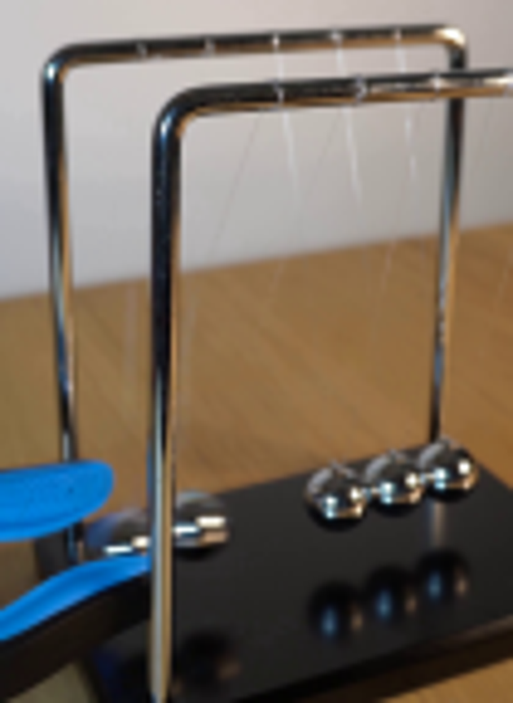
视觉工具实际返回图片 3
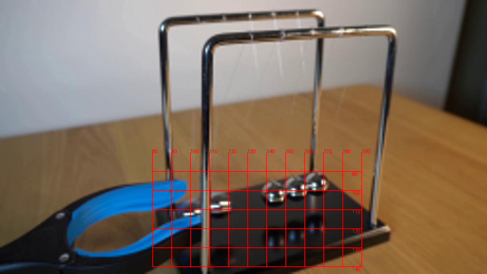
视觉工具实际返回图片 4
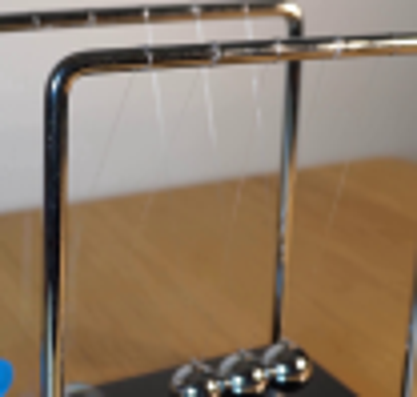
视觉工具实际返回图片 5
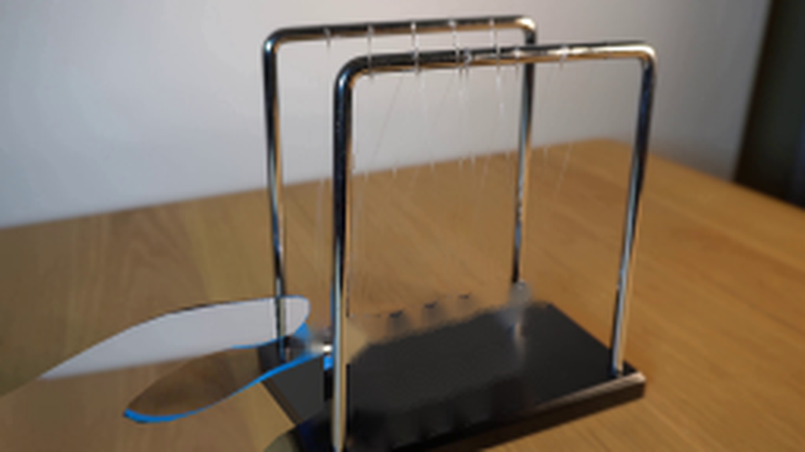
视觉工具实际返回图片 6
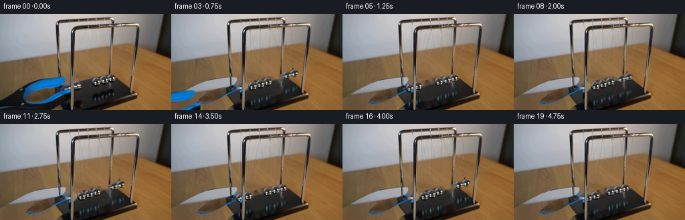
视觉工具实际返回图片 7
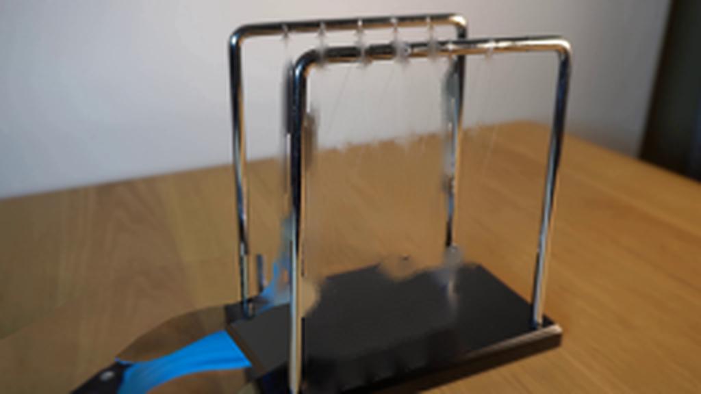
视觉工具实际返回图片 8
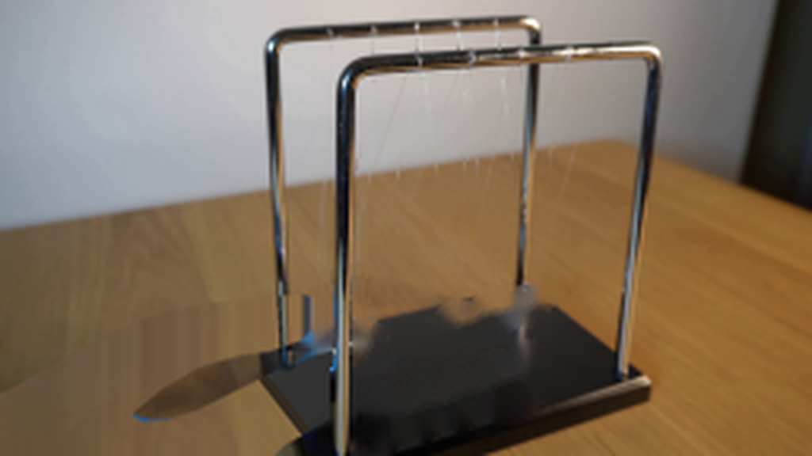
视觉工具实际返回图片 9
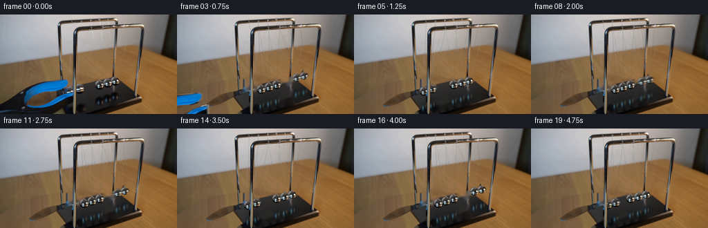
视觉工具实际返回图片 10
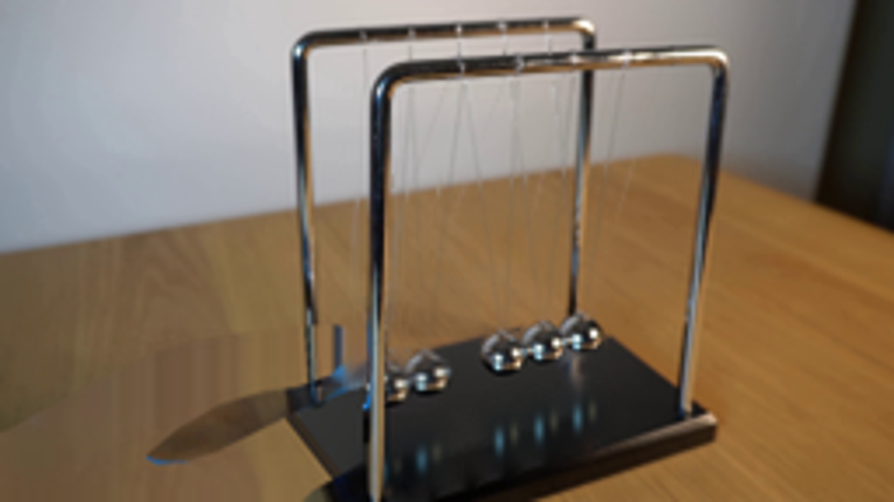
视觉工具实际返回图片 11
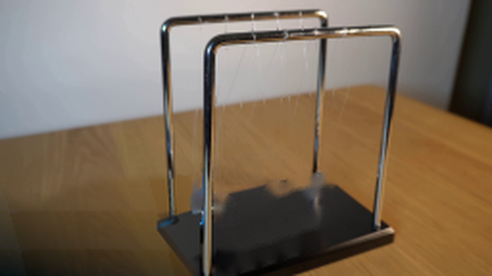
视觉工具实际返回图片 12
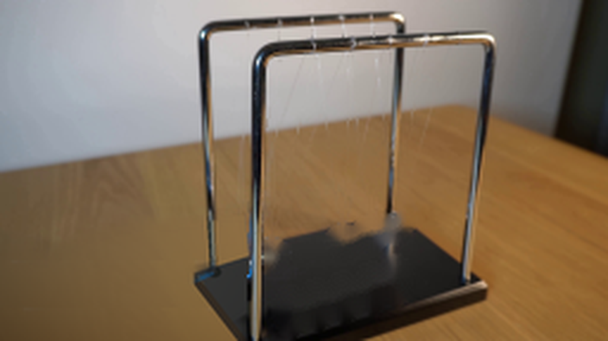
视觉工具实际返回图片 13

保存候选 5 份；完成命令 16 次；可验证图片返回 13 张。原始 API 响应与完整日志保留在本地。